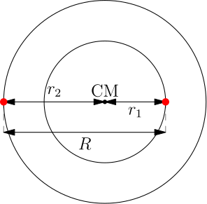
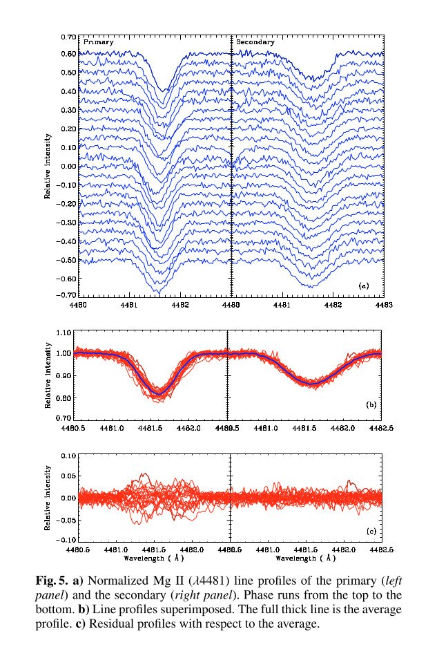

Astrofisica Generale I — 2
Maurizio Tomasi (maurizio.tomasi@unimi.it)
24 Novembre 2024
Teoria dei sistemi binari
Sistemi binari
I sistemi binari sono fondamentali per permettere la determinazione della massa delle stelle.
A parte quei pochi sistemi in cui si può usare il lensing gravitazionale, sono gli unici casi in cui sia possibile determinare la massa di una stella.
Osservazione di sistemi binari
Per binarie ad eclisse, i \approx 90^\circ.
Osservazione di sistemi binari
Osservazione di sistemi binari
|  |
|
Osservazione di sistemi binari
Le equazioni \begin{aligned} \frac{r_1}{r_2} &= \frac{v_1}{v_2} = \frac{M_2}{M_1}, \\ M_1 + M_2 &= \frac{P}{2\pi G} \bigl(v_1 + v_2\bigr)^3 \end{aligned} descrivono la dinamica di un sistema binario con orbite circolari.
Osservazione di sistemi binari
Dalla Terra possiamo misurare facilmente queste quantità:
- v_{r1} \equiv v_1 \sin i, v_{r2} \equiv v_2 \sin i;
- Il periodo dell’orbita P.
Determinare r_1 ed r_2 è estremamente difficile.
In termini di v_{r1} e v_{r2}, la seconda equazione diventa
M_1 + M_2 = \frac{P}{2\pi G} \frac{\bigl(v_{r1} + v_{r2}\bigr)^3}{\sin^3 i}.
Metodi numerici
L’equazione analitica è utile solo per mettere in relazione diverse quantità fisiche. Per ridurre misurazioni da telescopio si usano invece metodi numerici, più robusti e in grado anche di tenere conto di altri effetti:
- Ellitticità delle orbite;
- Deformazione della stella causata dalla rotazione (importante nelle eclissi);
- Limb darkening (minore luminosità al bordo);
- Gravity darkening (minore temperatura all’Equatore a causa del rigonfiamento rotazionale);
- Mutua interazione gravitazionale tra le due stelle (forze mareali);
- Etc.
Metodi numerici
Il codice di Wilson & Devinney era stato scritto per IBM System/360 Model 91:

Fonte: Wikipedia
{kind=link}
Il sistema CV Velorum
Il sistema binario CV Velorum
È un sistema binario spettroscopico per il quale sono visibili anche eclissi. (Costellazione della Vela, nel cielo australe).
È un sistema molto interessante, studiato in più lavori. Quelli a cui facciamo riferimento noi sono:
- Andersen (A&A 44, 1975, pagg. 355–362);
- Clausen & Grønbeck (A&A 58, 1977, pagg. 131–137);
- Yakut et al. (A&A 467, 2007, pagg. 647 655).
Periodo dell’orbita
Il periodo è stato determinato da Andersen (1975) e Clausen & Grønbeck (1977). Noi facciamo riferimento a quest’ultimo.
Filtri e stelle calibratrici
Tabella delle magnitudini

Cosa si può dedurre sul sistema binario CV Velorum dal grafico precedente a proposito delle due stelle che lo compongono e della loro orientazione nello spazio?
Caratteristiche di CV Vel
- Le due stelle hanno luminosità e raggio simile…
- …quindi probabilmente il centro delle orbite coincide col centro di massa…
- …quindi le due stelle hanno velocità orbitali uguali in modulo.
- Clausen & Grønbeck stimano il periodo col numero P = 6.889\ 494\,\text{d}.
Spettroscopia di CV Velorum
Nel 2007 Yakut et al. hanno pubblicato un lavoro in cui si fa un’analisi spettroscopica di CV Velorum.


|
Determiniamo la velocità radiale massima v_r dalla riga di SiIII e di HeI, assumendo che i grafici mostrino i due estremi delle oscillazioni Doppler delle righe. |
Effetto Doppler
Quando la velocità radiale è massima (\pm v_r), le lunghezze d’onda sono: \begin{aligned} \lambda_1 &=& \frac{c + v_0 + v_r}c \lambda_0, \\ \lambda_2 &=& \frac{c + v_0 - v_r}c \lambda_0, \end{aligned}
Da ciò segue che v_0 = \left(\frac{\lambda_1 + \lambda_2}{2\lambda_0} - 1\right) c, \quad v_r = c \frac{\Delta \lambda}{2 \lambda_0}.
Velocità radiale (SiIII)
\begin{aligned} v_0 &=& \left(\frac{4553.0\,\mathring{\mathrm{A}}}{4552.6\,\mathring{\mathrm{A}}}\right) c \approx 26.3\,\text{km\,s$^{-1}$},\\ v_r &=& c \frac{4555.0\,\mathring{\mathrm{A}} - 4551.0\,\mathring{\mathrm{A}}}{2 \times 4552.6\,\mathring{\mathrm{A}}} \approx 132\,\text{km\,s$^{-1}$}. \end{aligned}
Velocità radiale (HeI)
\begin{aligned} v_0 &=& \left(\frac{6678.75\,\mathring{\mathrm{A}}}{6678.1\,\mathring{\mathrm{A}}}\right) c \approx 29.2\,\text{km\,s$^{-1}$},\\ v_r &=& c \frac{6681.5\,\mathring{\mathrm{A}} - 6676.0\,\mathring{\mathrm{A}}}{2 \times 6678.1\,\mathring{\mathrm{A}}} \approx 123\,\text{km\,s$^{-1}$}. \end{aligned}
Velocità radiale
Il valor medio delle nostre stime di v_r è \left<v_r\right> = 128\,\text{km\,s$^{-1}$}.
Yakut et al. citano v_1 = 126\,\text{km\,s$^{-1}$} e v_2 = 128\,\text{km\,s$^{-1}$}.
Velocità stimate da Yakut et al.

(Perché i dati formano dei cluster?)
Determinazione delle masse
Se v_1 = v_2 = v_r e i = 90^\circ, allora M_1 + M_2 = \frac{P}{2\pi G} \bigl(2 v_r \bigr)^3
La massa totale è M_1 + M_2 = \frac{6.89\,\text{d}\,(2 \cdot 128\,\text{km/s})^3}{2\pi\cdot6.67\times10^{-11}\text{N m$^2$/kg$^2$}} = 11.2\,M_\odot.
Se le due stelle sono simili, assumiamo che M_1 \approx M_2 \approx 5.6\,M_\odot.
Parametri orbitali (Yakut et al.)

(Notare le discrepanze in V_0, non ancora spiegate).
|  | Quale stella ruota più velocemente? |
Classe spettrale

|
Sono stelle di tipo B (T \approx 18\,000\,\text{K}). |
Il database SIMBAD

Il database SIMBAD

Il database SIMBAD

Il database SIMBAD
Yakut et al. (2014)

Come vanno di solito le cose
Williams et al. (ApJ, 2013)

HDE 229232

HDE 308813